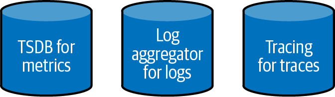
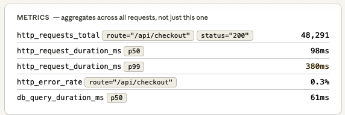
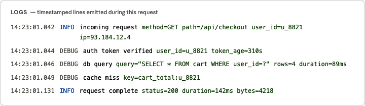
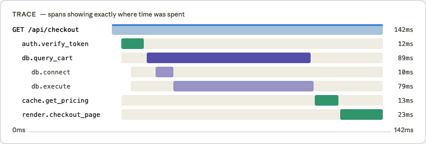
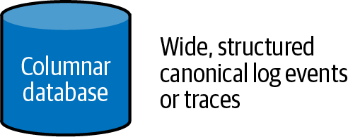
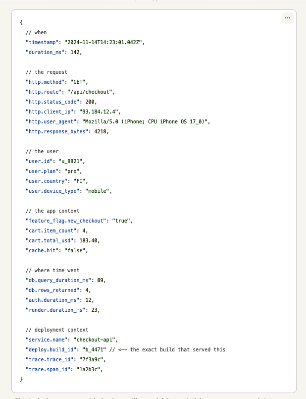

<title>第 1 章　什麼是可觀測性？ — 《可觀測性工程》第二版</title>
<link rel="stylesheet" href="style.css">

<nav class="chapnav">
    <a href="preface.html">← 上一章</a>
    <a href="index.html">目錄</a>
    <a href="ch02.html">下一章 →</a>
  </nav>
<main>
  <header class="masthead">
    <span class="eyebrow">Observability Engineering · Second Edition</span>
    
    <h1 class="title serif">第 1 章<br>什麼是可觀測性？</h1>
    <div class="rule"></div>
  </header>

  <p>可觀測性這個主題自十年前首次引入軟體開發領域以來，便持續獲得業界關注與熱議。然而，如同大多數複雜主題一樣，實務工作者採用與關注可觀測性的浪潮迅速遭到另一波過度簡化與挪用的反撲，這股反撲則是由炒作與行銷預算所推動。</p>
<p>當你看到這樣的循環一再上演，很容易變得憤世嫉俗：也許一旦牽涉到金錢，用詞就不再有意義了。但值得退一步思考：一開始我們究竟為何如此興奮？當初讓人耳目一新的究竟是什麼，又為何如此重要？</p>
<p>本章探討「可觀測性」一詞的數學起源，以及軟體開發產業如何詮釋並將其調整運用於我們的世界。我們也會檢視目前幾乎在每一家公司都正在碰撞的板塊——一邊是從伺服器維運演化而來、至今仍主導整個生態系的舊有方式，另一邊則是源自第一原理、能力範圍遠為廣泛的新方式，只是這股新方式正逆著長久以來的慣行方式而上。</p>
<p>在這個過程中，我們將主張可觀測性不僅僅是一種除錯技術或工具類別；它是軟體可靠程度的一項屬性，其根本性不亞於可靠性或可用性。</p>
<p>可觀測性作為一個概念的誕生，源自於必要性——當傳統工具與技術終究無法跟上日益複雜的系統所帶來層出不窮的新型問題時。</p>
<p>我們最好的推測是，人工智慧將會是促使團隊終於揚棄遙測的操作者模型、轉向更統一模型的推手，就如同 2000 年代商業資料所帶來的轉變一樣。可觀測性是 AI 產生程式碼的最後一道防線，而代理式行為本質上就難以預測且會隨時間改變。唯一的方法</p>
<p>就是在正式環境中執行時，運用富含情境的資料與精確的工具來觀察它到底在做什麼。</p>
<p>話說回來，我們十年前也是這麼想的。我們以為三大支柱模型不可能撐得過微服務、無伺服器架構與多語言持久化帶來的複雜度。但不知怎地，它撐過來了。我們是工程師，不是預言家。</p>
<p>這一章要塞進很多內容，我們開始吧。</p>
<h2 class="section serif">可觀測性的起源</h2>
<p>「可觀測性」一詞是工程師 Rudolf E. Kálmán 在 1960 年於一篇論文中提出的，這篇論文如今被視為現代控制理論——研究如何在雜訊、干擾與資訊不完整的情況下，將系統導向期望狀態的數學——的開山之作。1</p>
<p>Kálmán 的核心洞見在於，可觀測性與可控性互為對偶。從精確的數學意義上來說，一個你無法觀測的系統，就是你無法控制的系統，反之亦然。</p>
<p>對 Kálmán 而言，可觀測性所要問的問題是：根據你能量測到的輸出，能否推斷出系統完整的內部狀態？如果可以，這個系統就是可觀測的。如果不行，某些內部狀態就永遠隱藏不見，無論工程手法再高明也無法還原，因為這些資訊從一開始就沒有被擷取下來。</p>
<p>軟體界從系統工程借用了這個概念。就像我們借用的大多數東西一樣，它到來時保留了部分原意，也在傳遞過程中遺失了一些部分。（可控性的部分在軟體中並沒有對應物。）</p>
<p>然而，當我們把可觀測性的原則套用到軟體這個較為模糊的領域時，它開啟了與你所寫的程式碼互動及理解的全新且激進的方式。</p>
<h2 class="section serif">將可觀測性應用於軟體系統</h2>
<p>軟體工程有著悠久而豐富的歷史，向其他領域借用概念：生物學、建築學，以及各種工程學。我們之所以能在軟體中這麼做，是因為我們較不受物理限制的束縛。你在技術堆疊中走得越高，就越不受重力、質量或光速等現實限制所約束。我們唯一擁有的結構，就是我們自己用邏輯、語言與隱喻賦予自身的結構。</p>
<p class="fn">1 Kálmán, Rudolf E. 1960. “On the General Theory of Control Systems”. IFAC Proceedings Volumes 1, no. 1 (August): 491–502.</p>
<p>軟體可能不會像其組成部分——原子、電子、光纖等——那樣受限，但軟體有其自身的限制與考量因素需要煩惱。而 Kálmán 對可觀測性所下的定義背後的原理，已證實對於推理現代軟體系統相當有用。</p>
<p>多年來，我們的系統與實踐不斷在改變。我們對可觀測性的理解也隨之改變。</p>
<p>在第一版中，我們將可觀測性描述為一種新型工具，其定義取決於重新思考資料儲存與分析後所能解鎖的能力。這個定義引起了不少爭議——這也可以理解，因為它暗示了較傳統的工具完全不具備任何可觀測性。但我們後來不再偏好這個定義，原因不同：它強調的是功能與能力，但人們真正在意的是結果。</p>
<p>從那時起，我們已轉向一個更廣泛的觀點：可觀測性是軟體系統的一種屬性，就如同可靠性或效能一樣。我們將主張，你的軟體的可觀測性，是其可依賴性（dependability）的核心屬性。</p>
<p>「可依賴性」是我們現在仰賴的另一個借用概念（這次是來自系統工程領域）。軟體的可依賴性通常以一個從低到高的光譜來表示，其每個屬性也是如此。</p>
<p>讓我們先來檢視軟體可依賴性的其他屬性，接著再來看看該如何衡量可觀測性這項屬性。</p>
<h2 class="section serif">軟體可依賴性的屬性</h2>
<p>軟體已經吞噬了整個世界。每當我們打電話給朋友、搭火車，或是領到薪水時，我們都仰賴著一張龐大且看不見的軟體網絡，讓它大致上按照預期運作——儘管一個長存不變的事實是：所有硬體終將故障，所有軟體都有錯誤（bug）。</p>
<p>故障是生活中無可避免的事實。軟體產業在防止錯誤方面或許只取得了有限的進展，但我們在讓系統對這些錯誤更具韌性方面，已經做了很多努力。隨著科技在我們生活中扮演越來越重要的角色，我們對不可預測性的容忍度也隨之降低。這使得可依賴性——「電腦系統的可信賴程度」——成為這個時代的核心關切議題。</p>
<p>軟體的可依賴性無法用數字來量化。並不存在所謂「可依賴性分數為 9」或「可依賴性等級為 B+」這種東西。有些組成部分，例如可用性（availability），經常以「幾個 9」來衡量——例如，正常運行時間達到 99.9%、99.99% 或99.999%。你可以衡量可用性的秒數，但這個指標無法告訴你關於可依賴性的任何事。如果用戶不滿意，幾個 9 根本不重要。</p>
<p>幸運的是，測量可靠性特性已經有一套成熟的路徑。1995 年，Jean‑Claude Laprie 提出了一個衡量軟體可靠性的框架，透過評估六項互補的特性，共同描述系統整體的可信賴程度：2</p>
<dl class="deflist"><dt>可用性</dt><dd>系統在被請求時提供服務的能力</dd><dt>可靠性</dt><dd>系統依照規範提供服務的能力</dd><dt>可維護性</dt><dd>系統進行修復與演進的能力</dd><dt>安全性</dt><dd>沒有災難性後果</dd><dt>機密性</dt><dd>沒有未經授權的資訊洩露</dd><dt>完整性</dt><dd>沒有不當的系統變更</dd></dl>
<p>要評估可靠性，必須把三件事放在一起檢視：系統應該做什麼（功能）、系統實際做了什麼（行為），以及系統是如何建構的（結構）。這適用於硬體與軟體，也包含它們運作所處的環境——而且，關鍵的是，還包含與系統互動的人。Laprie 將軟體系統定義為本質上具有社會技術性質。</p>
<p>最後這一點很重要，也很容易被忽略。你無法只靠盯著程式碼就完整分析可靠性。系統中的人也是系統的一部分。</p>
<h2 class="section serif">可觀測性是可靠軟體的一項特性</h2>
<p>在 1990 年代中期，Laprie 的框架已經足夠全面，可以集體描述軟體的可靠性，就如同監控足以滿足那個時代系統的可靠性需求一樣。</p>
<p>單體系統相對可預測。在生產環境中會遇到的問題大多是二元的：網站要嘛正常運作，要嘛就是掛了。（如果運氣不好，還會有第三種狀態：莫名其妙地緩慢。）監控非常適合處理這種情況。它能偵測服務是正常、掛掉還是效能不佳，工程團隊則以修復性工作來恢復可用性。</p>
<p class="fn">2 Laprie, Jean‑Claude. “Dependability — Its Attributes, Impairments and Means.” In Predictably Dependable Computing Systems, edited by Brian Randell, Jean‑Claude Laprie,Hermann Kopetz, and Bev Littlewood. ESPRIT Basic Research Series. Springer, 1995.</p>
<p>在現代雲端時代，許多基礎架構的故障模式都被抽象化，交由平台處理。單體讓位給微服務。整個業界為了提升韌性而努力，使一切變得更加分散，並帶來許多次級效應。其中最重要的，就是我們對可用性思考方式的根本轉變。</p>
<p>雲端時代帶來了各式各樣龐雜的部分故障狀態。過去罕見的「第三種狀態」——找不到明確線索的莫名緩慢——如今卻成了最常見的故障模式：部分退化的負載平衡器；容器明明在印度，設定卻寫死指向 us‑east‑1；某個依賴項運行在別的團隊的基礎架構上，隱身於 API 之後，你甚至看不到它到底在做什麼。聽起來就像典型的週一。</p>
<p>簡單的監控系統可以告訴你系統大致是上線還是down機。更複雜的監控可以告訴你哪裡變慢了。但監控無法告訴你「為什麼」。你需要三者兼備，才能在正式環境中解決問題。</p>
<p>軟體的可靠程度，現在必須涵蓋故障多快被偵測到、多快能找出故障來源，以及團隊能多有效地推理出故障發生的原因——即便故障非常微小。換句話說，你必須能在任何層級做到這一點：從整個系統的高階視角，一路深入到某次會話中每個服務之間的每一次網路跳躍，以及介於兩者之間任何子集合或組合的請求。</p>
<p>這就是為什麼我們認為，是時候在 Laprie 的清單中加入第七項特性了：</p>
<dl class="deflist"><dt>可觀測性</dt><dd>理解或除錯任何給定系統狀態的能力</dd></dl>
<p>這不是個小小的補充。本書接下來的篇幅，都將用來闡述為什麼它應該被納入其中，以及該如何達成。</p>
<h2 class="section serif">你的軟體可觀測性有多高？</h2>
<p>可靠性、安全性、可維護性等可靠程度的特性，並無法用數字衡量；可觀測性也是一樣。但你可以對其進行質性推理，而這正是一個有用的起點。</p>
<p>故障偵測相對直截了當：問題發生時，你是否能在客戶回報之前就得知？如果你曾經管理過現代雲端應用程式，你就會知道監控漏掉關鍵問題有多常見。客戶支援團隊反映投訴激增，於是你去看儀表板，卻發現一切看起來都正常——如果這聽起來很耳熟，那你就是遇到了故障偵測的問題。</p>
<p>隨著架構複雜度增加，找出問題發生位置（分流）也變得更加困難。在低可觀測性的系統中，這通常表現為警報風暴：某個底層系統的故障，會在其他系統中觸發數十甚至數百則警報。當一個關鍵依賴失效時，你是否確切知道該從哪裡查起？還是必須檢查多個來源，一步步推理找出連鎖故障的根源？</p>
<p>理解問題為何發生通常是最困難的部分。找到問題來源之後，還得釐清是什麼原因造成的。找出因果脈絡可能非常具有挑戰性，而這正是團隊最難掌握的後設流程：搞清楚「他們是怎麼推理出來的」，並將這一連串線索編碼進系統當中，而不是完全存在資深工程師的腦袋裡，僅以直覺式的靈光乍現呈現出來。</p>
<p>就像《星艦迷航記》裡的 Scotty 曾說過的：「我光憑甲板震動的感覺，就能告訴你我們的航行速度。」Scotty，你厲害，但這對船上其他人一點幫助都沒有。可以請你把目前的曲速顯示在大家都看得到的地方嗎？</p>
<p>你的團隊裡，不論資歷深淺的工程師，是否都能透過查問系統發出的資料，快速診斷複雜的問題？還是說，正確的診斷需要深厚的內部知識與第六感？</p>
<p>這個問題的答案，就是你的軟體有多可觀測。而人工智慧正在為這個產業帶來的變化，將使這一點的重要性呈指數級提升。</p>
<h2 class="section serif">基數</h2>
<p>在數學中，基數指的是一個集合中元素的數量。在資料庫中，則是指某個欄位中不重複值的數量。一個名為 Status、內容只有「true」或「false」的欄位，其基數為 2；而通用唯一識別碼（UUID）或其他任何獨一無二的值集合，則具有可能的最高基數。</p>
<p>高基數資料是最具描述性與識別性的資料類型，對可觀測性而言至關重要。想想看，你最想用來搜尋或分組的那些有用屬性：建置編號、commit hash、容器 ID、跨度 ID、用戶 ID、應用程式名稱、查詢 hash 等等。這些全都是高基數，而這也正是它們之所以有用的原因。</p>
<p>高基數的值可以被降取樣（例如依姓氏字首分桶，或將所有 HTTP 錯誤碼統一替換成「5xx」），但這個動作無法還原。如果你在把資料寫入磁碟之前就先進行彙總，那就再也無法把「蛋殼拼回去」了。</p>
<p>對於高度依賴指標的團隊來說，基數是一個永無止境的麻煩。高基數資料是最有價值的資料，但指標系統本來就不是為了處理它而設計的。只要有足夠的基數在不知不覺間滲入資料中，單一指標就可能讓你每週的帳單暴增數萬美元。</p>
<p>在具備高度可觀測性的軟體系統中，你應該能夠：</p>
<p>• 理解應用程式可能陷入的任何系統狀態，即使是完全從未見過的狀態，也不需要為了處理它而撰寫新的程式碼（那意味著你得事先知道會發生這種狀態才能加以應對）。</p>
<p>• 將一組 feature flag 與其他任意組合做比較，並依端點、API 金鑰、查詢雜湊，或任何其他有趣的維度組合來拆解與分組，且基數沒有任何限制。</p>
<p>• 觀察用戶如何與你剛部署的功能互動。可依交易請求、瀏覽器工作階段、行動應用程式工作階段或聊天記錄進行追蹤。</p>
<p>• 若有任何服務水準目標（SLO）正快速燃燒，你應該能夠篩選出違反的事件並揪出其中的模式。（「緩慢請求的暴增來自澳洲的讀取複本，源自剛部署到 1% 金絲雀（canary）節點的某個 build ID，該版本使用了 x、y、z 這幾個旗標；用戶端錯誤字串顯示 DNS 逾時。」）</p>
<p>值。輕鬆做到。值。輕鬆做到。</p>
<p>• 找出離群值。任何種類的離群值。輕鬆做到。</p>
<p>要回答這些問題，你需要精確性、彈性，以及（理想上）速度。</p>
<p>可觀測性程度較低的軟體系統，是指這些問題只能靠投入大量時間與人工勞力才能回答，或是仰賴能夠憑直覺推斷出答案的專家。</p>
<h2 class="section serif">遙測的兩種競爭模型：三大支柱與統一資料架構</h2>
<p>任何工具的優劣，都可以依據它能夠在多大程度上幫助你達成高度可觀測性來評估。真正重要的是背後的原則——而這兩種最主流做法背後的原則，可說是截然不同。</p>
<p>這兩種底層變革目前正在整個產業中激烈碰撞：一邊是「我們一直以來都是這樣做」的不可動搖之石；另一邊則是 AI 與市場競爭壓力所帶來銳不可擋的巨大力量。工程團隊究竟會全面升級他們的工具組，還是「三大支柱模型」會成功轉型進化、證明自己是無法被撼動的？我們拭目以待。</p>
<h2 class="section serif">三大支柱模型</h2>
<p>第一種底層做法（或：第一波底層變革）是舊有的模式。我們稱之為「三大支柱」——指標（Metrics）、日誌（Logs）與追蹤（Traces）——但這其實只是個善意的謊言。系統訊號的類型遠遠不只三種：還包含錯誤、例外情況、效能剖析（Profiling）資料、產品分析、資安事件等等。如圖 1‑1 所示，每一種訊號類型都會被分流輸出，並隔離儲存在各自專屬的資料孤島（Silo）之中。</p>
<figure class="plate">
<figcaption>圖 1‑1　三支柱模型如何儲存遙測資料。</figcaption></figure>
<p>每種訊號都各自被送到獨立的孤島中儲存。指標會送到時間序列資料庫（TSDB），日誌會送到日誌聚合服務，追蹤則送到追蹤服務。如果程式碼產生了例外、錯誤、剖析資料或其他任何訊號，每一種也都會儲存在自己的孤島中。</p>
<p>為了說明這一點，我們來看一個簡單的網頁結帳請求，如下所示：</p>
<pre class="code">GET /api/checkout trace_id=7f3a9c user_id=u_8821 <span class="tok-number">200</span> OK 142ms</pre>
<p>它至少會產生三組不同的遙測資料：指標、日誌以及一筆追蹤，分別如圖 1‑2、圖 1‑3 與圖 1‑4 所示。</p>
<figure class="plate">
<figcaption>圖 1‑2　指標對於特定的請求一無所知。它們儲存的是跨所有請求彙總後的計數器與百分位數。這對於得知「有東西出錯了」很有用，但無法用來理解「為什麼」或「是誰的請求」。</figcaption></figure>
<figure class="plate">
<figcaption>圖 1‑3　日誌會按順序告訴你發生了什麼事，你可以看到像 user_id 和duration 這樣個別的欄位值。但若要回答「哪裡變慢了？」，你就得憑藉時間戳記在腦中重建時間軸。</figcaption></figure>
<figure class="plate">
<figcaption>圖 1‑4。這個追蹤瞬間就能回答這個問題。你可以看到 db.query_start 消耗了 142 毫秒中的 89 毫秒，而其中大部分時間都花在 db.execute 上。你可以看出大部分時間花在哪裡（花在 db.execute 上）。因為它與日誌共享同一個trace_id，統一工具就能將兩者串接起來。</figcaption></figure>
<p>這個產業中大多數的軟體工程師，從未使用過三支柱方法與其孤島式做法以外的東西。為什麼？因為基礎設施與維運部門一直擁有這些工具的所有權，而三支柱正好符合他們的需求。</p>
<p>如果你在基礎設施部門工作，你很可能要操作數百甚至數千個並非你所撰寫、也無法變更的元件。第三方程式碼會發出它想發出的內容；你幾乎沒有置喙的餘地。你只能把它存放到某處，盡量善加利用。</p>
<p>這就是基礎設施，它會隨時產生大量的日誌與指標。顯而易見的解法依然是正確的解法：把指標存到指標儲存庫，把日誌存到日誌儲存庫。而且最好便宜一點——這些訊號有一些價值，但不算太高。</p>
<p>這是基礎設施的問題。開發的問題則不同。</p>
<p>對於你的團隊實際撰寫的程式碼——那些定義你公司、你的競爭優勢、你的產品的服務——你對於發出什麼內容、如何組織結構、以及送到哪裡，都擁有完全的掌控權。</p>
<p>你不必被迫接受程式碼發出什麼就將就使用什麼。你可以刻意進行檢測。你可以就要保留哪些脈絡、維持哪些關係、以及如何組織你的遙測資料，來為未來的自己保留選擇的彈性，做出明智的決定。</p>
<p>而如果你這麼做，將能釋放出巨大的價值。</p>
<p>在本書其餘部分，我們會用「傳統」或「傳統可觀測性」來描述這些較舊的做法。當我們明確指的是把訊號類型分開處理的做法時，會用「三大支柱模型」或「多支柱模型」；而對於較新的做法，則會用「現代可觀測性」或「統一模型」。3</p>
<div class="callout"><p>我們會把可觀測性視為一個光譜：傳統的三大支柱風格產生的可觀測性程度較低，而我們所提倡的做法則能產生較高程度的可觀測性。</p></div>
<p>大多數團隊並沒有這樣做，而是被交付了維運工具，並被要求將就使用──也就是把原本為你無法掌控的程式碼所設計的基礎設施模型，套用到最重要的程式碼上。指標與日誌對路由器來說是合理的，但用在計費服務上卻嚴重不合適。</p>
<p>這一點之所以重要，是因為如果軟體的真實成本是以維護成本來衡量，那麼遙測很可能是你手上最強大的槓桿點。遙測就是你的程式碼在正式環境中對你說話，告訴你正在發生什麼事。你對於如何發出、儲存與分析這些資料所做的決定，並非基礎設施決策，而是產品決策。大多數團隊一直是預設地做出這些決定，而非有意識地設計。</p>
<p>簡而言之，我們經歷的第一次底層變革，留下的其實是一套最初專為維運人員設計、最後才由開發工程師接手的工具。但這套舊工具已經產生了太過龐大的『生態系引力』，讓它至今依然是預設的首選——它已經太過根深蒂固，深深綁定在團隊的組織結構、廠商的商業關係，甚至是工程師憑肌肉記憶行事的順手習慣裡，導致大多數企業從頭到尾都沒想過要質疑它。</p>
<h2 class="section serif">統一儲存模型</h2>
<p>第二個底層架構的巨變是『統一儲存模型』。這是一種基於第一性原理推導而出的新型態遙測資料儲存方式，如圖 1‑5 所示。實際範例請見圖 1‑6。</p>
<p>關於某個請求的所有遙測資料僅會被集中儲存一次，以完整保留其上下文與各種關聯。這些資料會以『標準日誌』（Canonical Logs，一種包含大量屬性的結構化日誌）來儲存，或是直接作為 Span 與 Trace 儲存。</p>
<p class="fn">3 我們曾試著用「可觀測性 1.0」來稱呼三大支柱模型，用「可觀測性 2.0」來稱呼包含大量屬性、結構化、可追蹤的日誌事件。這同樣惹惱了不少人，所以我們停用了這種說法。我們並非有意冒犯或貶低其他工具或其他廠商；事實上，我們正努力不去冒犯任何人。三大支柱模型對於第三方程式碼與基礎設施使用情境而言，正是合適的模型，就如同可追蹤、脈絡豐富、高基數的模型，適合用於你自行開發的程式碼。我們從未聽過有任何廠商反駁這一點，只是覺得說出來很失禮。我們的目標是精確，而非失禮。但我們最終必須忠於讀者。</p>
<figure class="plate">
<figcaption>圖 1‑5　統一儲存模型如何儲存資料。</figcaption></figure>
<figure class="plate">
<figcaption>圖 1‑6　一個包含大量屬性、可追蹤的結構化事件範例，具有 24 個維度。請注意豐富的情境脈絡加上高基數資料，如何讓你能夠以極高的精確度挑選出任意子集合的請求。</figcaption></figure>
<p>這些原則值得明確點出，因為它們代表了一套關於遙測用途的截然不同假設：</p>
<p>資料的價值來自於情境（context），而且其價值增長是組合式的，而非線性的。</p>
<p>你所附加的每一項額外情境,都不只是多了一個可查詢的東西;它會為既有的每一個欄位帶來新的組合方式,使整個資料集的價值呈指數級4成長。欄位之間的關係,是資料中最強大的部分。這些關係應盡可能保持完整,而不是被切割散落在各個孤島之中。這個概念的技術術語稱為「高維度」。</p>
<p>細節是任何資料集中最具識別性的部分。</p>
<p>高基數——用戶 ID、追蹤 ID、建置 ID、工作階段 ID，任何可能有數百萬種不同值的欄位——是一種超能力，而不是一個需要被工程手段消除的問題，只因為指標系統無法處理它。讓每個請求變得獨一無二的那些東西，正是讓你日後能夠找到它的關鍵。</p>
<p>預先聚合是一趟單程旅行。</p>
<p>如果你在寫入時就對遙測資料進行聚合，你就永遠無法將其還原。這個桶（bucket）是永久性的。如果你儲存原始事件或追蹤資料，你就可以隨時衍生出任何聚合結果——包括那些你當下還沒想到要定義的聚合。預先聚合的代價，就是永久摧毀未來的調查可能性。</p>
<p>你不知道自己不知道什麼。</p>
<p>為了替未來的自己保留選擇的餘地，請以原始形式儲存追蹤資料或包含大量屬性、結構化的日誌事件（也稱為「標準日誌」），這樣你就能在查詢時才進行聚合。任何在寫入時就設定的模式（schema）、索引或聚合，都會造成死路。一個強迫你事先定義好問題的遙測系統，只會讓你永遠只能找到你原本就預期會找的東西。</p>
<p>靜態儀表板的價值有限。</p>
<p>你需要的是靈活性與可探索性：能夠任意切片與組合資料，能夠從聚合結果放大到單一請求、再縮小回來，並且能夠沿著蛛絲馬跡一路追查下去。一次調查應該感覺像是在與你的資料對話，但這需要保留資料點之間的關聯性。靜態儀表板是一句制式用語；動態介面才是一場對話。</p>
<p>快速的反饋迴圈就是一切。</p>
<p>耗時數分鐘的查詢會打斷你的思路。如果你無法快速迭代——問一個問題、幾秒內得到答案、再問下一個問題——那你就不是在探索，而是在填報單。</p>
<p class="fn">4 如果你有一個包含大量屬性、結構化的事件或一個追蹤資料，其中有 29 個屬性，而你又新增了第30 個屬性，它所增加的價值，等同於前面 29 個屬性加總起來的價值。</p>
<p>我們將在第 3 章（以及本書其他部分）進一步深入這段歷史。目前值得注意的是：這些原則並非我們發明，我們也不是唯一有這個想法的人。以支援高基數與互動式探索的欄位儲存為後盾的豐富結構化資料，正是商業智慧（BI）軟體至少 20 年來的運作方式。行銷團隊對數十億筆事件執行漏斗分析、世代比較與臨時探索，早已是家常便飯。</p>
<p>想像一下，若試圖用預先定義好的一堆指標桶來經營你的銷售流水線，你就能體會到軟體工程師一直以來是如何摸黑前進，使用一些從未被設計或定價來回答這類問題的基礎設施工具。</p>
<p>維度（Dimensionality</p>
<p>）</p>
<p>「維度」指的是一個資料集所擁有的特徵、或獨立屬性的數量。在數學與機器學習中，這是用來衡量資料複雜度與規模的指標。</p>
<p>在可觀測性（Observability）的領域裡，維度指的是你的結構化日誌（或Trace）中，不重複欄位的總數。高維度資料集對可觀測性（以及對 AI）而言至關重要，因為它正是衡量你的「上下文（Context）有多豐富」的標準。</p>
<p>如果一筆結構化日誌有 4 個維度（屬性），這些屬性可以交織出 15 種不同的查詢組合。這個數學會呈指數級別飆升：</p>
<p>4 個欄位：有 6 種兩兩配對的查詢組合，共15 種所有可能的搭配。</p>
<p>8 個欄位：有 28 種兩兩配對的查詢組合，共255 種所有可能的搭配。</p>
<p>30 個欄位：有 435 種兩兩配對的查詢組合，高達 11億種所有可能的搭配。</p>
<p>這就是為什麼傳統的「三大支柱模型」代價如此高昂。當你將遙測訊號按類型打散，丟進各自孤立的工具時，你不僅僅是損失了「部分」的除錯價值，你是失去了「絕大部分」的價值。</p>
<p>平心而論，那些 BI 工具過去的價格確實貴得驚人，但這已經不再是藉口，也不再是唯一的選擇。</p>
<p>這兩種模式是不相容的。你不能既把資料存在一個地方，又同時存在三個地方。它們代表了對於遙測用途、儲存方式，以及應該能回答哪些問題的根本不同假設。</p>
<p>了解自己身處哪個板塊（以及要移動它需要付出什麼代價），是當今工程組織所面臨的最重要問題之一，尤其是在他們正努力應對 AI 生成程式碼的浪潮，並準備支援代理式工作流程（agentic workflows）之際。</p>
<h2 class="section serif">可觀測性是開發者意圖的驗證</h2>
<p>過去十年來，支持可觀測性的論點大多圍繞著開發者生產力與事故應變兩個主題。這兩者都真實存在，也都有其價值。然而事實證明，這兩種框架都嚴重低估了真正的利害關係。</p>
<p>整個軟體開發生命週期（SDLC）此刻正經歷劇烈的顛覆。當代理（agent）能夠比人類更快地撰寫、測試、審查並發布程式碼時，驗證程式碼便成了瓶頸所在。</p>
<p>遙測就是剩下的最後一道防線，是整個被壓縮、崩塌的生命週期中的安全機制。</p>
<p>軟體工程這個領域有著悠久的傳統，把正式環境（production）當成一片異域——只有在被要求修復棘手臭蟲時才會造訪，而非他們偏好的居所。依照這種思維，如果一個臭蟲進到了正式環境，那麼開發者必定在某個環節上失職了。</p>
<p>這種想法一直都是錯的。臭蟲與正常行為之間的界線並非總是清楚分明。程式碼在正式環境的混亂之中會做出什麼行為，也並非總能事先得知。AI 把不確定性（nondeterminism）當作一項特徵，而非湧現屬性，這徹底粉碎了這些迷思。</p>
<p>只有正式環境才是正式環境。要嘛在正式環境中測試，要嘛就是活在謊言裡。</p>
<h2 class="section serif">代理式入侵才剛剛開始</h2>
<p>對大多數人而言即將到來（對許多人來說已經到來）的，是在正式環境中運行的代理。它們不只是撰寫程式碼，還會測試、部署、運行、觀察，並根據所發現的結果採取行動。（關於代理與可觀測性的更多討論，請見第 10 章。）</p>
<p>代理式的調查並非確定性的，會隨著它們學到新事物而不斷改變。代理揭穿了「正式環境前測試足以應付一切」這種說法的謊言。要了解一個代理將會做什麼，唯一的方法就是對它進行檢測，並觀察它在真實世界中的行為。</p>
<p>資深工程師腦中所承載的一切智慧與連結——在一次高風險部署後依建置 ID 檢查延遲、在結構描述遷移後持續數天觀察快取行為、在計費作業變慢時查找N+1 查詢模式——都必須被編碼進系統裡，否則它們就不存在。</p>
<p>Agent 在生產環境中的表現，取決於它們能存取的資料品質。Agent 需要脈絡、關係，以及多樣化的來源。它們需要透過語意慣例（semantic conventions）獲得某種本體論上的基礎，也需要具備足夠精確細節的資料，才能追蹤隨時間發生的細微變化。最重要的是，它們需要我們批判性地思考自己所做的直覺跳躍，並將其轉化為脈絡、基數與其他線索的軌跡。</p>
<p>高度的可觀測性讓 Agent 能夠建立快速且具探索性的回饋迴圈（Feedback loop），並取得真實、精確的訊號。例如：這個 build ID 在這個 endpoint 上的延遲（Latency）是否升高了？這個 feature flag variant（實驗組版本）產生的錯誤率，是否跟對照組（Control）不同？這個特定的使用者群體（Cohort），是不是遇到了其他使用者沒遇到的狀況？　在傳統的『三大支柱』架構下，要在不同支柱（工具）之間切換，往往需要憑工程師的直覺來拼湊線索（Intuitive leaps）。但是，統一、高基數（High‑cardinality）且具備豐富上下文的遙測數據，就不需要這種靠直覺的盲目猜測。</p>
<h2 class="section serif"><span class="nowrap">「護欄」</span>機制正迎來高光時刻</h2>
<p>現在是投入軟體開發最令人興奮的時代。目前業界正在進行一場必要且重要的討論：探討我們究竟需要在營運環境中設置哪些護欄（Guardrails），才能在安全地驗證開發者意圖的同時，逐步且漸進地擴大影響範圍。</p>
<p>feature flag、漸進式交付、金絲雀部署、SLO、特徵化測試（characterization tests）、自動回滾等——這些技術並不新穎。它們已經存在多年（第 2 章會有更多說明）。每個人都同意擁有這些東西很棒，然而大多數組織都沒有。實作這些工具一直既耗時又困難，讓一般規模的工程組織難以企及。</p>
<p>AI 同時朝兩個方向改變了過去的權衡考量。　一方面，它是賦能者（Enabler）——它讓許多事情變得更簡單，包含自動監測（Auto‑instrumentation）、異常偵測，以及過去需要專屬平台團隊才能建置的系統性驗證。　另一方面，它是強制驅動力（Forcing function）——你的競爭對手正利用 AI 以前所未有的速度開發產品與功能，而市場變化的腳步不可能為了等你而放緩。如果你想跑得快，你就需要護欄（Guardrail）。如果你想從手工精雕細琢的程式碼，跨越到『軟體工廠』的工業化規模，這就是必經之路。</p>
<p>這也是我們的絕佳機會，能將我們長久以來提倡的工程價值觀——當責（Ownership）、自主性（Agency）、跨領域的融合——帶入主流。但這一切的前提是：你必須能夠將你的開發意圖，一路追蹤進正式環境（Production），並精確地驗證它實際上到底在運作些什麼，否則這一切都不可能實現。</p>
<h2 class="section serif">結論</h2>
<p>雖然可觀測性作為概念已存在半個世紀，但在軟體系統中的應用卻是近期才出現的調適。對軟體系統而言，可觀測性是可靠性的一種屬性：它衡量的是你理解或除錯任何給定系統狀態的能力，這種能力呈現在一個連續體上。</p>
<p>現代系統如此複雜、廣泛分散且具有韌性，以至於服務的輕微降級（以及其他因刻意變更而產生的非預期後果）比以往任何時候都更難以識別與診斷。許多領導者似乎將希望寄託在 AI SRE 與代理型（agentic）解決方案上，期望它們能拯救大局。這種做法究竟能有多大成效尚屬未知，但我們過去對「魔法」的成績單並不亮眼。</p>
<p>三大支柱方法（日誌、指標與追蹤）對基礎設施而言效果不錯，但對軟體開發的使用情境卻不適用。這些支柱缺乏精確度與深度。工程師向來都是靠直覺與英雄式的努力來彌補這個落差，但代理無法做到這一點。</p>
<p>將所有訊號一起儲存並拓寬資料，是一項技術與社會層面的重大變革。它解決了長期困擾三大支柱的關聯性與基數問題，讓我們得以用更有效率的成本，理解或除錯任何系統狀態，無論其複雜程度為何。</p>
<p>在下一章，我們將討論如何在程式碼跨入生產環境的過程中建立信心。</p>

  <footer class="colophon">
    <span>《可觀測性工程》第二版 · 第 1 章</span>
    <span>什麼是可觀測性？</span>
  </footer>
</main>
